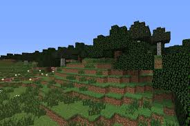
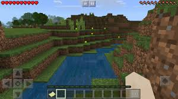
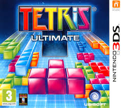
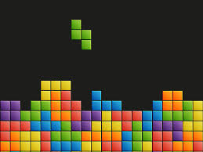
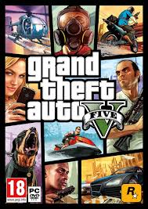
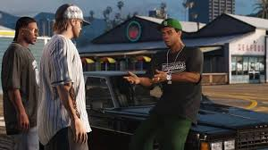
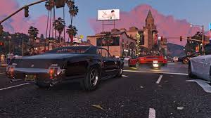
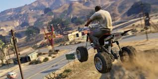
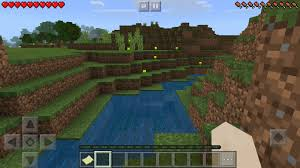
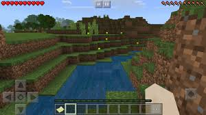

Jeu bac à sable indépendant et pixelisé dont le monde infini est généré aléatoirement,
Minecraft permet au joueur de récolter divers matériaux, d'élever des animaux et de modifier le terrain selon ses choix, en solo ou en multi (via des serveurs).
Il doit également survivre en se procurant de la nourriture et en se protégeant des monstres qui apparaissent la nuit et dans des donjons.
Il peut également monter de niveau afin d'acheter des enchantements.



Tetris
Année de sortie : 1984
Plateformes : Omniplateforme
Genre :Jeu de réflexion
PEGI : 3+
Editeur : SEGA/Nintendo
Exemplaires vendus : 170 millions
Tetris est le célèbre puzzle-game dans lequel
vous devez empiler des briques afin de constituer des lignes qui s'effaceront au fur et à mesure de votre progression.
La difficulté augmente au fil de votre avancée.


Grand Theft Auto V
Année de sortie : 2013
Plateformes : Ps4-One-Ps3-360-PC
Genre :FPS
PEGI : 18+
Editeur : ROCKSTAR
Exemplaires vendus : 135 millions
Jeu d'action-aventure en monde ouvert, Grand Theft Auto (GTA) V vous place dans la peau de trois personnages inédits
: Michael, Trevor et Franklin. Ces derniers ont élu domicile à Los Santos, ville de la région de San Andreas.



 
